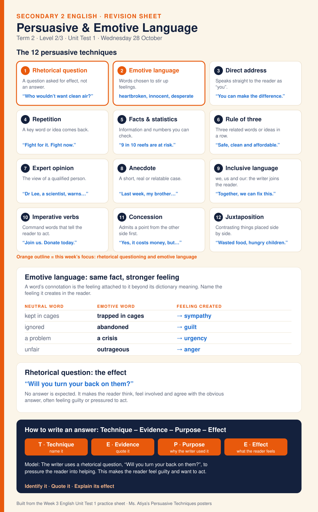

Sheet 1
Persuasive & Emotive Language
The twelve persuasive techniques with a meaning and example each, with rhetorical question and emotive language highlighted. Emotive words are shown as neutral word, emotive word and feeling created. Answer with Technique – Evidence – Purpose – Effect. For the Level 2/3 Unit Test on Wednesday 28 October.
Caption & source →